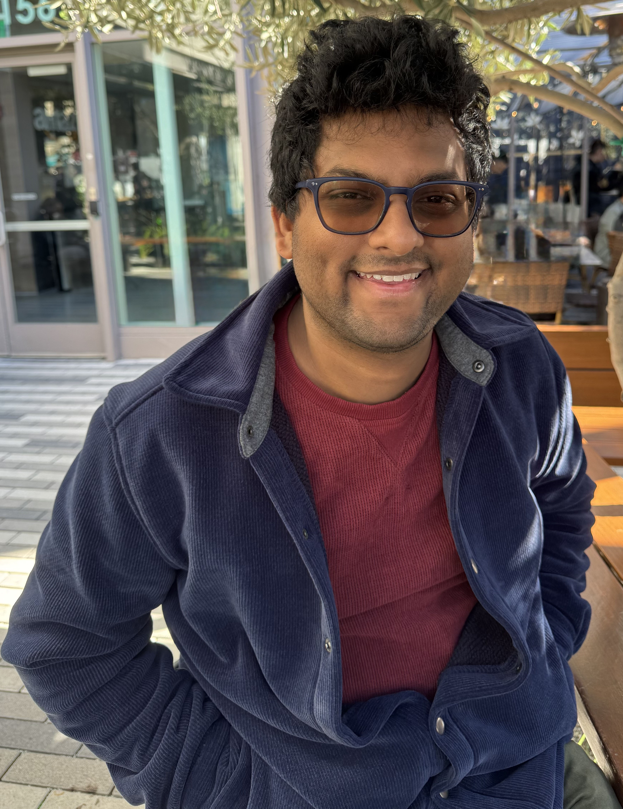

Prasanna Ramakrishnan
Email: pras1712 [at] stanford [dot] edu
I am a Postdoctoral Fellow at Harvard University, hosted by Ariel Procaccia. My research studies social choice problems (like voting and matching) from the perspective of theoretical computer science.
I received my PhD from Stanford University, advised by Moses Charikar and Li-Yang Tan. I was also an undergrad at Stanford (in math) and had the pleasure of working with Jacob Fox and Mary Wootters.

Selected work
-
The Possibility of Approximately Optimal Social Choice
My PhD thesis.
-
Six Candidates Suffice to Win a Voter Majority
with Moses Charikar, Alexandra Lassota, Adrian Vetta, and Kangning Wang.STOC 2025
-
Breaking the Metric Voting Distortion Barrier
with Moses Charikar, Kangning Wang, and Hongxun Wu.Journal of the ACM, 2024
SODA 2024 (Best Paper Award) -
Distortion in Metric Matching with Ordinal Preferences
with Nima Anari and Moses Charikar.EC 2023